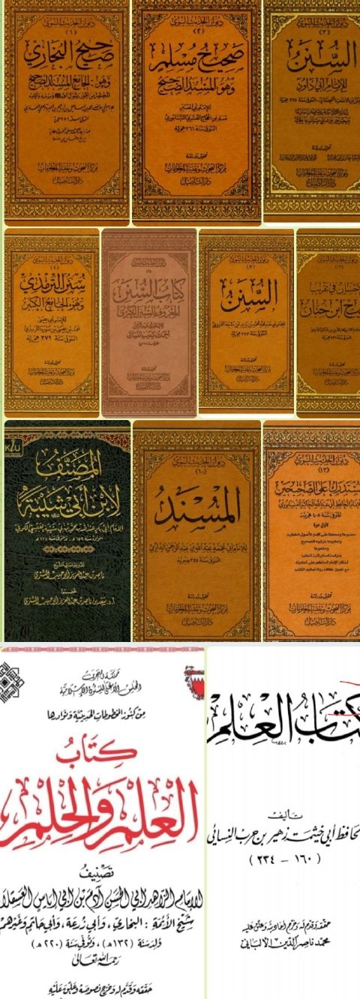

Downloads need an internet connection.
كتاب العلم من كتب الستة وابن حيان والدارمي وابن شيبة والمستدرك
Authors: محمد بن إسماعيل البخاري أحمد بن شعيب النسائي محمد بن حبان البستي محمد بن يزيد بن ماجه القزويني مسلم بن الحجاج بن مسلم القشيري النيسابوري الترمذي أبو داوود
Editors: مركز البحوث وتقنية المعلومات
Publishers: دار التأصيل
▫️ العنوان: كتاب العلم من كتب الستة وابن حيان والدارمي وابن شيبة والمستدرك ▪️ المؤلف: #أبو_داوود • #النيسابوري • #البخاري • #النسائي • #ابن_حبان • #ابن_ماجه • #الترمذي ▫️ المحقق: #مركز_البحوث_وتقنية_المعلومات ▪️ الناشر: #دار_التأصيل ▫️ تاريخ النشر: 1433هـ 2012م ▪️ بلد النشر: القاهرة، #مصر ▫️ الطبعة: 1 ▪️ عدد الأجزاء: 1 ▫️ الصفحات: 768 ▪️ نوع الوعاء: #كتاب ▫️ التصنيف الرئيسي: #الحديث_وعلومه ۪